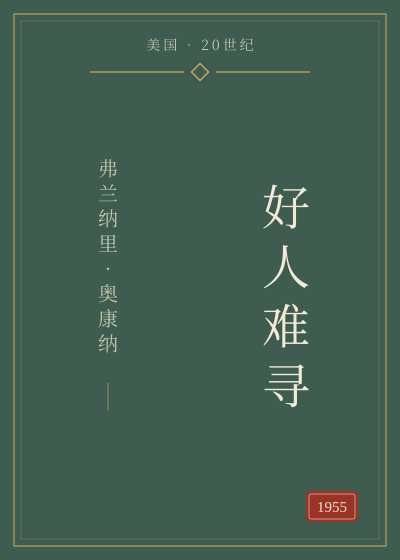

好人难寻
一、基本信息
| 作者 | 弗兰纳里·奥康纳 |
|---|---|
| 成书/出版 | 1955年（Britannica：A Good Man Is Hard to Find, and Other Stories (1955)——'she came to be regarded as a master of the form'） Flannery OConnor — Encyclopaedia Britannica（百科全书） |
| 国别/地区 | 美国 |
| 时代 | 现当代 · 20世纪 |
| 体裁 | 短篇小说集 |
| 语言 | 英语 |
《好人难寻》恩典结构图（主题·结构图）
二、创作背景
Britannica（B291）：同名篇创造'an unexpected agent of salvation in the character of an escaped convict called The Misfit'（逃犯'格格不入者'成为意外的救赎媒介——B291）；'regarded as a master of the Southern gothic, a style of writing often characterized by grotesque, macabre, or fantastic incidents'（B291）。
暴力（B291 作者自述引文）：'is strangely capable of returning my characters to reality and preparing them to accept their moment of grace'。
三、内容脉络
同名篇：老祖母一家遇逃犯'格格不入者'——枪响前的'恩典时刻'（通说待核）。
《人造黑人》《善良的乡下人》等（篇目通说待核）。
四、主要人物表
| 人物 | 身份 | 说明 |
|---|---|---|
| 老祖母 | 叙述对象 | （通说待核） |
| '格格不入者'（The Misfit） | 逃犯 | （B291） |
五、主题与艺术特点
- 暴力与'恩典时刻'（B291 作者自述）。
- 南方哥特（B291：grotesque, macabre, or fantastic）。
- '好人'的反讽（篇名通说待核）。
六、影响与评论
- Britannica：'regarded as a master of the Southern gothic'（B291）。
Flannery OConnor — Encyclopaedia Britannica（百科全书） - Britannica：Complete Stories (1971) 获国家图书奖（B291 作者级）。
Flannery OConnor — Encyclopaedia Britannica（百科全书）
七、阅读建议
难点
- 哥特暴力与恩典的语法。
- 南方宗教背景。
- 《好人难寻》（新星出版社/上海译文版本，通说待核）。
- 英文原版（公有领域渐近）。
奥康纳首选。
八、待核实
- 1955年出版（Harcourt, Brace说）核对。
- 老祖母/The Misfit对话核对。
- 1972年国家图书奖核对。
本页主要来源
弗兰纳里·奥康纳的其他收录作品：好人难寻